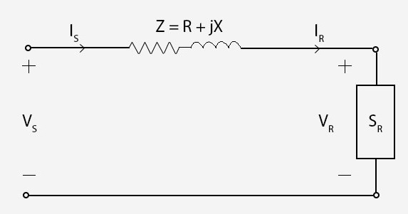
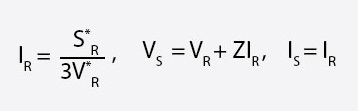
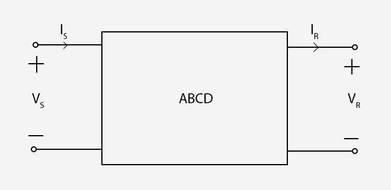
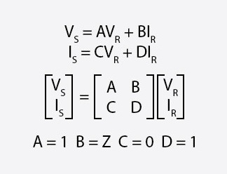
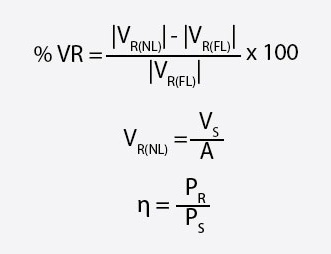
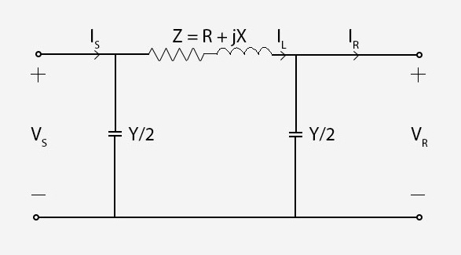
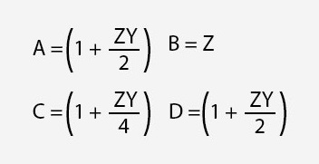
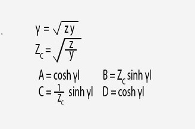
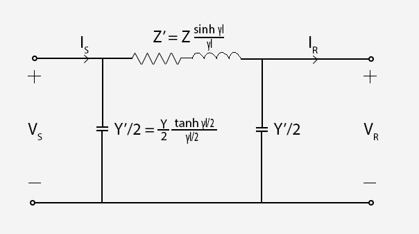

Elelctric energy generating units are at various different locations most of the time. The main reason for that is to utilize geographical elements around us with high efficiency in our favor such as bulding a dam in a certain area or locating a wind-power energy plant in a specific environment that gives the most efficient results for the generation. In this context, we need transmission lines to supply loads in our cities and industries from those generating areas. And it's obvious that developing an efficient transmission network which is hundreds of kilometers long most of the time, is crucial and to be able to understand the topic deeply, this simulating program is created. Before diving into theoretical foundation of transmission line models, it important to note that, properties of a transmission line such as resistance, inductance and capacitance are significant to build our models. On the other hand, shunt conductance which represents the leakage currents, is neglegible compared to the current flows through the transmission line and will be neglected for the calculations.
The short line model can be represented as in the figure shown below.
A short line is defined as 80 km or less long, and capacitance effect of the line may be neglected. Z impedence can be calculated as multiplying per unit length values with the length of the line. With the help of the characteristic equations shown below, it is quite easy to calculate the values we would want to know:
Also it can be represented by two port network as shown below.
 Voltage regulation which is the percentage difference in voltage between the receiving end the sending end, and line efficiency are also important characteristics of transmission lines and they can be obtained as below.
VRNL means no load condition where IR equals zero, therefore, it can be caculated as VS / A . In the short line model A = 1, so VRNL will be equal to VS.
A medium line can be described as longer than 80 km and shorter than 250 km. With the longer values of the line, shunt capacitance must be considered. To model a medium line, nominal pi model is used and it is shown below.
Y represents the total shunt admittance of the line. Shunt conductance is neglegible, so Y can be calculated as (jwC) x l
According to Kirchoff's Laws for current and voltage, A B C D constants for the medium line model can be obtained as shown below.
A B C D constants will be complex numbers, hence, it will be more time consuming to calculate the values compared to the short line model.
So far line parameters assumed as lumped for short and medium lines. However, to be able to model a long tranmission line (250 km or longer), distributed parameters must be condidered. Using Kirchhoff Law's and solving differential equations involved, which we won't discuss about them here to keep this short and simple yet informative, A B C D constants and equivalent pi model are obtained for the long line model as shown below.
 
γ and Zc are propagation constant and characteristic impedence respectively. They are obtained with using per unit length values of y and z.
Compared to the medium line model, hyperbolic functions are involved here, and this makes the process even harder to calculate everything. That's why computer programs are powerful and essential to speed up the whole process. In the next sections, this will be explained in a more detailed manner.
The interface consists of various ranges to determine the characteristics of the transmission line that will be used for the simulations. After choosing preferred values, "compare line models" button could be used to print out numerous values of the transmission line according to all three models. After inspecting the results, "plot the graphs" button can be used to display relevant plots about the simulation. Plots can be downloaded as images to compare with future simulations.
The main objective with this experiment is to cut out the tidious, time consuming mathematical process and instead, letting a computer program do all the work and give us the end results, which provides us to compare and learn the topic faster. To be able to see the differences between the line models and the effects of the parameters that selected, all the calculations must be done over and over again. This simulation try to solve this problem to help learning the topic without being lost in the mathematical calculations. Visual supplements like graphs for every other simulation makes learning process much more permenant. One of the most important factors here is all these features are accessible on a web page. Users don't need to install any third party software to use the system. It is a simple, focused and powerful tool that is just one click away to use it.